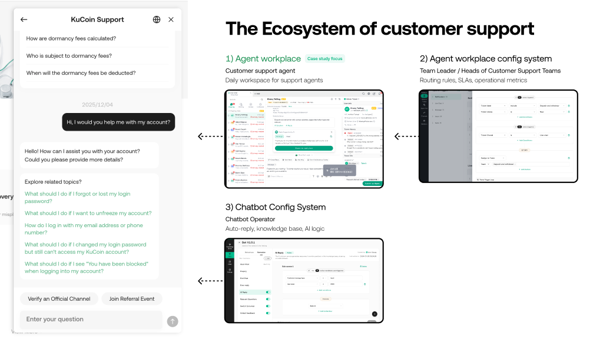
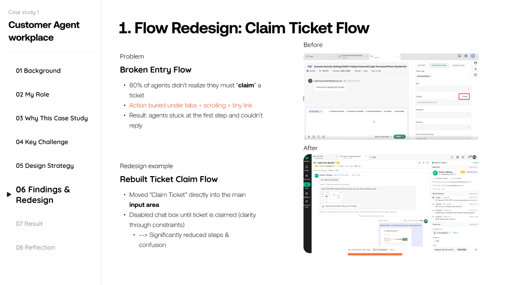
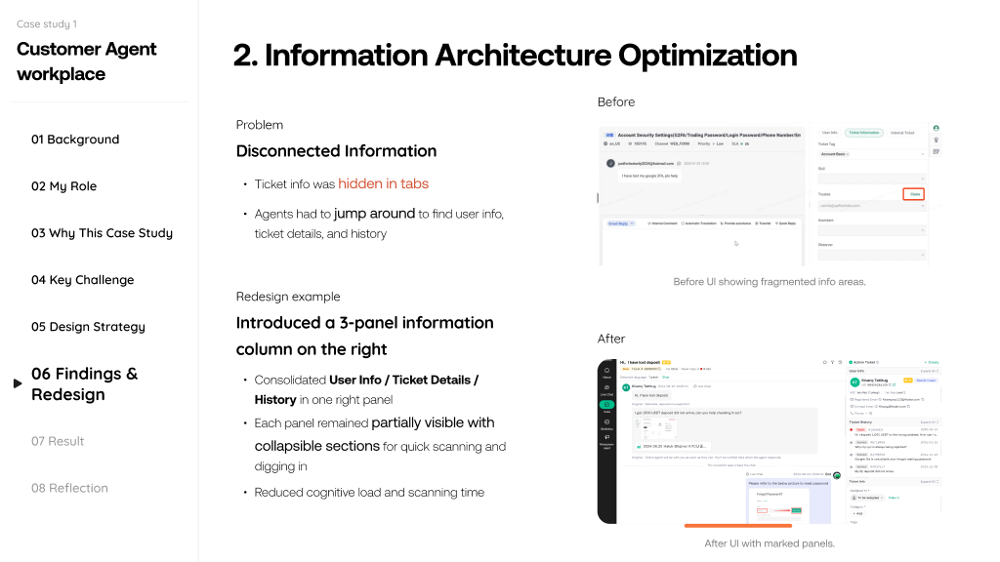
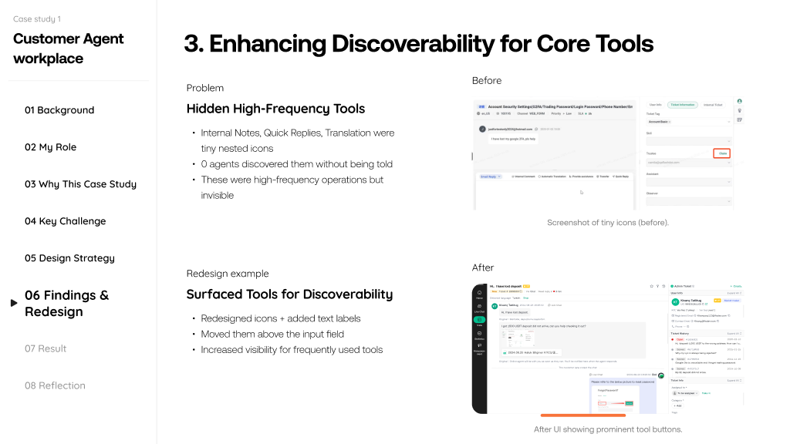

Context
Seven systems, one team, six months
As Avenir Group's crypto exchange scaled, the operational infrastructure hadn't kept up. Customer service ran on Zendesk at over $500k/year. Compliance used a poorly structured legacy system that couldn't support international expansion. Data operations relied on manual extraction and spreadsheets. There was no unified internal portal or design language.
The mandate: replace third-party tools with purpose-built systems, build the compliance infrastructure for new regulated markets, and do it all in parallel without a large team.
· My role: Design lead — directly owned the Customer Service Workspace and Online CS Configuration systems; set design direction and led critique rituals for the full set of seven tools; built the shared component library
· Team: 3 designers (including me) + 0.5 support designer = 3.5 FTE across 7 simultaneous projects
· Timeline: ~6 months, all systems Stage 0→1
· Constraint: Compliance and regulatory requirements meant some systems couldn't be deprioritised — the compliance system needed to go live alongside the exchange's international market launches


The challenge of parallel 0→1 work
Each system had a different user group, different business driver, and different urgency. The challenge wasn't designing any one system — it was designing seven systems coherently, on the same schedule, without a large team.
Three types of design problem running simultaneously
· Replacement tools (CS Workspace, chatbot config): Users had strong mental models from existing third-party tools. The design had to be meaningfully better — not just cheaper — to get adoption from 50+ customer service reps who were used to Zendesk.
· Compliance-critical tools (Compliance system): Shipped alongside regulated market launches. Required ongoing alignment with the compliance team on workflow requirements, and had zero tolerance for missing functional requirements.
· Operational efficiency tools (Data management, CS config, work hours): Users were internal — operations, data, and management — with specific technical needs and less tolerance for friction than consumer-facing products.
The shared design problem underneath all of them
All seven systems needed to feel cohesive — a consistent navigation, interaction model, and visual language — even though they served completely different user groups. Without a shared system, we'd ship seven inconsistent tools that engineers would maintain separately and users would find confusing if they needed to cross between them.
This was the argument for building the component library in parallel with everything else — not after. It was the only way to maintain quality across the entire portfolio with 3.5 designers.
Customer Service Workspace
The primary agent-facing system. 200+ customer service representatives handling inbound calls, live chat, and ticket management — previously on Zendesk at over $500k/year. Crypto exchange CS has specific requirements that off-the-shelf tools don't cover well: verifying user KYC status mid-ticket, cross-referencing transaction holds, surfacing compliance flags on an account while a rep is actively responding.
The rescue sprint — 2 weeks, broken MVP
The initial MVP was built without sufficient end-to-end UX logic. Key features were hidden or inaccessible; the core "claim ticket" entry point was buried under tabs and scrolling. After observing agents repeatedly failing to complete basic tasks, I stepped in alongside a newly hired B2B designer to reframe the journey, fix the IA, and ship a corrected design to development within 2 weeks (Jan 1–15, 2025).
· Research method: Live observation with 5 agents using the existing MVP prototype — watching 2–3 agents per session, mapping confusion points, dead-ends, and workarounds. No surveys, no hypothetical scenarios — just real agents trying to use real software.
· Outcome of research: Three structural blockers identified that accounted for almost all the friction. Each became a targeted redesign.
Finding 1 — Broken entry flow
80% of agents didn't realise they had to "claim" a ticket before they could reply. The claim action was buried under tabs, scrolling, and a tiny link. Agents got stuck at the very first step, unable to respond to customers.
· Fix: Moved "Claim Ticket" directly into the main input area. Disabled the chat input until the ticket was claimed — using constraint as a clarity mechanism rather than an instruction label. Significantly reduced steps and eliminated the entry confusion entirely.

Finding 2 — Disconnected information
Ticket details, user profile, and case history were split across tabs, forcing agents to switch context constantly while composing replies. High-volume agents handling dozens of tickets per shift found this cognitively exhausting.
· Fix: Introduced a 3-panel right column — User Info, Ticket Details, and History each in a partially-visible collapsible panel. Agents could scan all three at a glance and expand only what they needed, eliminating the context-switching pattern.

Finding 3 — Hidden high-frequency tools
Internal Notes, Quick Replies, and Translation were represented by tiny nested icons. Zero agents discovered them without being told they existed — despite these being among the most-used operations in a full shift.
· Fix: Replaced icon-only buttons with labelled action buttons, repositioned above the input field. Feature discoverability increased dramatically in follow-up testing — agents found and used these tools without prompting.

AI features — contextual assistance, not automation
Alongside the structural fixes, I designed two AI-assist features guided by Ant AI Design Guidelines and competitive benchmarking, with the principle that AI in enterprise contexts must be contextual and timely — supporting the agent's judgment, not replacing it.
· AI Reply Suggestions: Detects intent and keywords in incoming customer messages and surfaces one-click suggested responses. Agents can accept, edit, or ignore. Designed to reduce typing time and improve accuracy for high-volume repetitive query types without constraining response quality for edge cases.
· AI Summary Panel: Summarises customer sentiment, the core issue, and a recommended next step at the top of each ticket. Reduces cognitive load for agents switching between tickets — they can re-orient in seconds rather than re-reading a full conversation thread.
Online CS Configuration System
The management layer for the CS workspace. 3+ Customer Service Leaders who configure routing rules, queue priorities, team structures, and SLA settings — previously done through the third-party vendor's admin panel, which was inflexible and required vendor support for any non-standard workflow.
Self-service configuration as the design goal
The core insight: CS leaders needed to be able to adapt their team's workflows in real time — when there's a product incident, traffic spikes, or a new market launches — without raising a support ticket with a vendor or waiting for an engineering sprint. The third-party system made configuration feel like system administration. The new system needed to make it feel like team management.
Key design decisions
· Rules over code: Routing logic had previously required engineering to configure. The design translated conditional logic (if user type = VIP, route to queue X) into a visual rule builder that CS leaders could manage directly.
· Preview before applying: Changing a routing rule has immediate operational consequences. We added a simulation mode where leaders could preview how a rule change would affect the current queue before applying it — a key feature for building confidence among users who weren't technical.
· Audit trail by default: Every configuration change is logged with timestamps and the editor. For a regulated environment where CS workflows interact with compliance processes, this wasn't just useful — it was required.
Compliance system & data management platform
Compliance system — building for international scale
The existing compliance tool was described internally as "poorly planned" — incomplete workflows, no structured case management, and unable to support the compliance team's expansion from 1 officer to 12+ across India, Turkey, Thailand, and other regulated markets.
The key design challenge: compliance work is non-linear. Officers review multiple evidence types, cross-reference transaction data, communicate with users, and track open cases simultaneously. The system had to support that multi-thread mental model without forcing a rigid linear flow that would slow investigations.
My contribution: defined the IA and interaction patterns for the case view. The detailed screen work was owned by T.A. on the team, with my oversight during weekly critique sessions.
Data management platform — replacing manual workflows
Operations and data teams were using a legacy platform that required manual extraction and relied on repetitive queries to get standard views. The goal was to automate the most common data retrieval patterns and give non-technical operations staff direct access to the data views they used most.
This was a system where the primary users (operations managers, data analysts) had very specific mental models about what data they expected where. The design process for this system was heavily research-led — understanding those mental models before designing the interface, not after.
Backend design system & component library
The component library wasn't a separate project — it was the infrastructure that made shipping seven tools simultaneously possible. Without it, each designer would have made independent decisions about tables, forms, status indicators, and navigation patterns, resulting in seven visually and behaviourally inconsistent systems.
How it was built
· Components extracted from real problems: Rather than designing components in the abstract, we extracted them from the first system being built (the CS Workspace) and immediately tested them in the second. This meant the component library reflected actual product complexity, not theoretical coverage.
· Frontend in sync from the start: I established a process where component additions and changes were reviewed by the lead frontend engineer before being published. Any component that couldn't be implemented cleanly in code was redesigned before going into the library.
· Design guidelines alongside components: Each component in the library came with usage guidance — when to use it, what states it handles, what it intentionally doesn't do. This reduced the number of design review questions by making decisions explicit rather than case-by-case.
The design principles we used as a team
With 3 designers working on different systems, we needed shared decision-making criteria beyond visual consistency. We aligned on three principles for this portfolio of tools: reduce repetition (automate or simplify anything operators do more than once a day), surface the right signal at the right time (information density is appropriate if it helps decision-making; it's noise if it doesn't), and make errors recoverable (all configuration changes should be reversible; all destructive actions require confirmation).
Leading a small team across parallel workstreams
With 3.5 designers and 7 simultaneous projects, the biggest risk wasn't any individual design quality — it was coordination overhead consuming the design time we needed for actual work.
What we put in place
· Weekly critique ritual: A fixed 60-minute session where each designer walked through one decision they'd made that week — not a full design review, but a focused discussion of one hard trade-off. This kept the team's thinking aligned without requiring full cross-reviews on everything.
· IA decisions made once: For patterns that would appear across multiple systems (navigation structure, list/detail views, filter patterns), I documented the decision once and flagged it as a team standard. This meant we weren't relitigating the same structural question in four different contexts.
· Design handoff owned by the designer: Rather than a centralised PM-managed handoff process, each designer was responsible for their own engineering pairing. This was faster and reduced the translation errors that come from handoff documents — but required each designer to understand the implementation constraints of their system.
· Pair reviewing with PM on edge cases: For systems with complex business rules (compliance system, CS routing), I ran dedicated sessions with the PM to walk through edge cases before handing to engineering. Catching edge cases in design rather than implementation reduced rework significantly.
Outcome
Validation before rollout
Before full rollout, pilot agents reported in small-scale testing:
· Clearer navigation and journey logic — agents no longer getting stuck at the claim-ticket step
· Faster access to key features — tools that had zero discoverability were now used without prompting
· Less confusion across the claim-ticket and info-scanning flows — the 3-panel layout reduced context-switching friction measurably
The redesigned solution became the foundation for the 20-agent team rollout. The team was restructured before full launch, but the design work became the baseline for future iteration.
What shipped across all seven systems
· All seven systems shipped 0→1 within the 6-month timeline
· Customer Service Workspace delivered for 200+ CS agents, replacing Zendesk. Estimated >$500k/year in third-party tool costs removed. AI Reply Suggestions and AI Summary Panel shipped as core features.
· Compliance system went live in time to support international market launches — the compliance team scaled from 1 to 12+ officers without rebuilding their workflow system mid-expansion.
· Data management platform replaced manual extraction for operations teams across spot trading, compliance, and management functions.
· Component library was adopted as the official internal frontend design standard and maintained by the frontend team alongside product updates.
Reflections
· Contextual AI is essential in enterprise UX. Both AI features only work because they're tied to real-time task context — the ticket content, not generic model outputs. The design principle of "contextual and timely" held up in testing.
· Early user research saves development cost. Skipping validation on the original MVP created a design that had to be substantially rebuilt. Two weeks of observation after the fact was more expensive than one week before the MVP shipped.
· Match talent to task. Pairing a designer with strong interaction logic skills on the claim-flow problem, and a designer with strong visual execution skills on the information architecture — rather than splitting work arbitrarily — significantly reduced rework cycles.
· The measurement gap. We shipped without consistent adoption metrics or task-completion tracking across the CS Workspace. The only signal we had was qualitative — pilot agent feedback. For a replacement product, a clear time-to-resolve-ticket metric would have been the right north-star from the start.